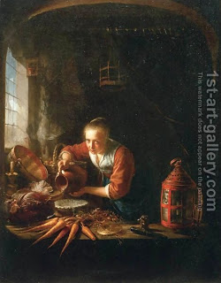

Zevachim 110 - Offering Parts of Sacrifices Outside
A flour offering includes flour, oil, and frankincense. A handful of flour is separated first and burned on the Altar, and then the remainder is eaten by the Kohanim. If one burned this remainder as an offering outside the Temple, he is not liable, because the remainder was not destined for the Altar. If, however, he mixed the handful back in and burned the mixture outside - he is liable, because after all the handful has been burned.
If one throws a part of the sacrificial blood upon an altar outside the Temple, he is liable. On Sukkot, they poured pure water on the Altar, in addition to wine, and Rabbi Elazar says that for puring this water outside one is also liable. Rabbi Nechemia makes one liable even for pouring the remnants of the blood of the offering, since the remnants are supposed to go to the base of the Altar.
Art: Gerrit Dou - Woman Pouring Water Into A Jar